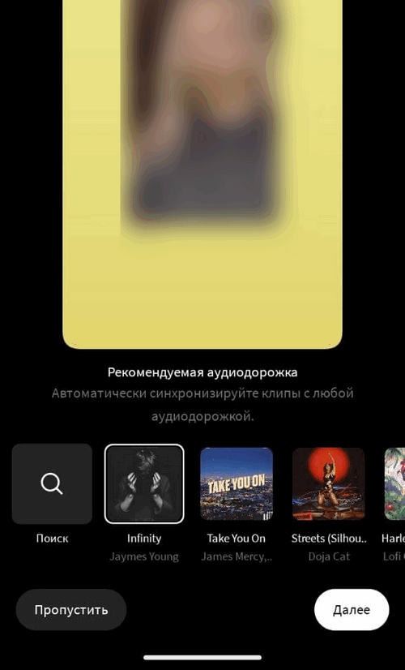
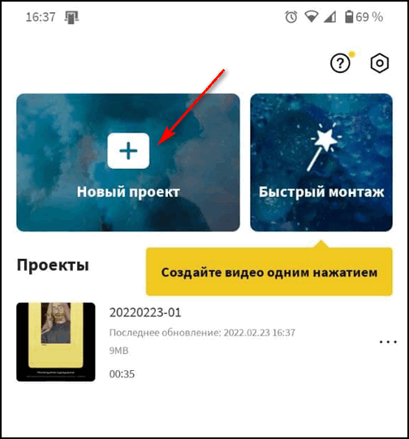
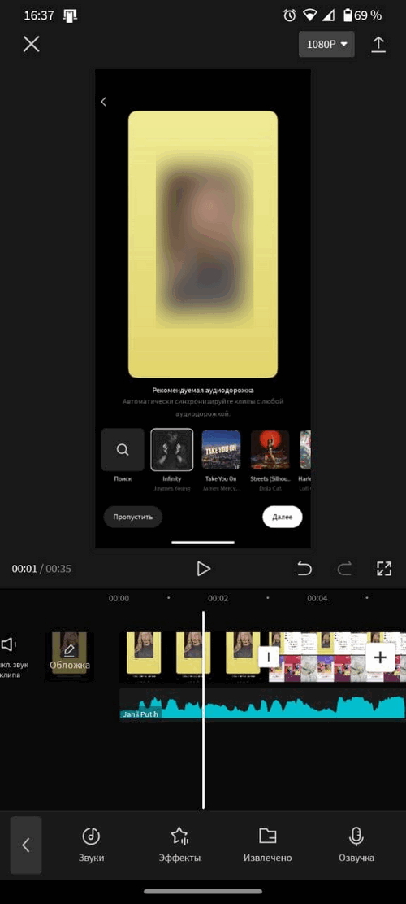
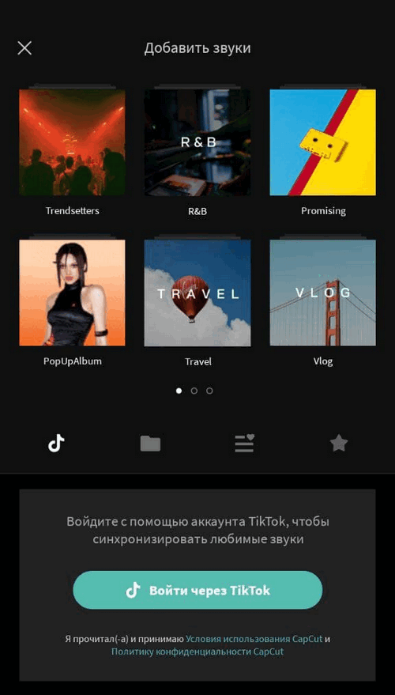
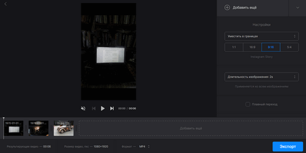
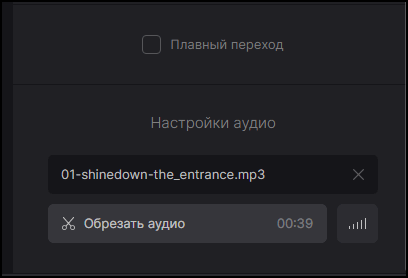
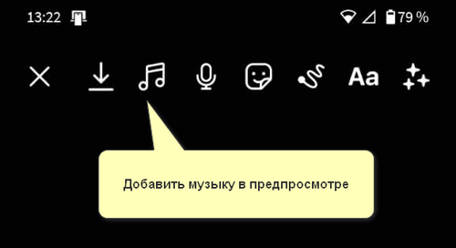

Как сделать Рилс из фотографий в Инстаграме

Создать Рилс в Инстаграме* из фотографий возможно при добавлении до 10 снимков. В социальную сеть необязательно размещать только видеоформат: нужно выбрать аудио и картинки.
Форматы Рилс в Инстаграме*: описание
В Рилс есть три типа длительности клипов и четыре формата записи:
- стандартное создание клипа/опубликовать из Галереи;
- сделать видео ответ на чужой комментарий;
- ремикс. Склеить свой и чужой клип;
- сделать слайд-шоу из фотографий.
Последний вариант подойдет, чтобы записывать клипы без сторонних приложений, но с фотоподборкой.
Чтобы разместить в Reels запись, нужно, чтобы её расширение соответствовало MP4 или AVI. Если создавать через стороннее приложение, то этот факт должен учитываться. При загрузке фото или создании клипа в самом Инстаграме* – формат установлен автоматически.
Сделать подборку для Рилс из фото
Сделать видео Reels из фотографий пользователь может, если перейдет к записи клипа и вместо видеоформата, выделит в Галерее фото. Снимки должны быть подготовлены заранее, потому что режим не предполагает создание фото. Как сделать подборку:
- Зайти в Instagram* – нажать сверху по значку: «+».
- Выбрать: «Видео Reels» - перейти к выбору файлов из Галереи.

- Зажать по первому снимку – выбрать до десяти фото.
- Появится надпись: «Обработка видео» - снизу список аудиодорожек.

- Выбрать одну подходящую – перейти к меню редактирования.
- Далее – заполнить описание и опубликовать.
Пользователь может выбирать всего до десяти снимков. Среди материалов могут быть короткие видео, но общая продолжительность не должна превышать одной минуты (60 секунд).
Приложение CapCut
Для работы с фотоподборками можно воспользоваться приложением CapCut, которое активно применяют для обработки Reels. Поддерживает не только обработку уже готовых видеоматериалов, но и создание новых, на основе картинок и с добавлением аудиодорожки. Создать слайдшоу с помощью приложения:
- Зайти в Play Market – скачать и установить CapCut.
- Открыть – выбрать: «Новый проект».

- В верхней части экрана выбрать: «Фото» - указать до десяти снимков.
- Они появятся на видеодорожке – ниже: «Выбрать аудио».

- Выбрать и добавить музыкальное сопровождение – нажать сверху: «Поделиться» или «Скачать на устройство».

Преимущество приложения в том, что можно подключиться к своему аккаунту в TikTok и взять музыкальные композиции оттуда. Или попросту воспользоваться перечнем популярных мелодий.
Онлайн-сервисы для видео
В Reels фото под музыку можно создать с помощью сервиса Clideo, которое поддерживает загрузку фотографий и звуков. Сделать слайдшоу:
- Зайти в сервис Clideo – выбрать снизу функцию: «Слайдшоу».
- Добавить файлы – выбрать фото на компьютере.

- Появится окно с редактированием порядка снимков – справа, в нижней части меню: «Добавить аудио».
- Выбрать на компьютере файл формата mp3 – вставить в видеоролик.

- Нажать по кнопке: «Экспорт» - получить файл на устройство.
Чтобы на ПК выделить сразу несколько фото, нужно зажать кнопку CTRL и мышкой выделить нужное количество. Некоторые форматы могут не поддерживаться: сверху появится уведомление, сообщающее об ошибке.
На первом этапе пользователь может выделить только фотоснимки и уже переходя к редактированию – подобрать аудиофайл.
Загрузить в Рилс клип из снимков в Инстаграм*
После того, как пользователь сделал видео в Reels из нескольких фотографий – он может опубликовать его в социальной сети.
- формат клипа MP4 или AVI;
- размер файла не более 1 Гб;
- использованный аудиотрек либо взят из Инстаграма*, либо записан как оригинальная дорожка.
- Зайти в Инстаграм* – нажать сверху: «+».
- Загрузить видео в Reels – выбрать созданный клип из Галереи.
- Опубликовать.
Наложение музыки на фото для Reels
Есть 4 варианта, как добавить к фотографиям в Reels музыкальное сопровождение:
- использовать стандартную коллекцию, которая предложена в разделе;
- своя музыка, если записывать клип с помощью стороннего приложения;
- озвучка. Записать трек на заднем плане;
- использовать стоковые треки из приложений для редактирования.
К примеру, если создавать слайдшоу в сервисе Canva, там есть подборка бесплатной музыки без авторского права. Для записи озвучки в Reels:
- Перейти к созданию видео с помощью фото.
- Добавить нужные снимки – перейти в меню предварительного просмотра.

- Сверху появится значок в виде микрофона – записать озвучку.
Это может быть речь автора или музыкальная композиция, которую включили на другом устройстве. Но с последним может возникать проблема авторского права: клип могут заблокировать за использование музыки без указания АП.